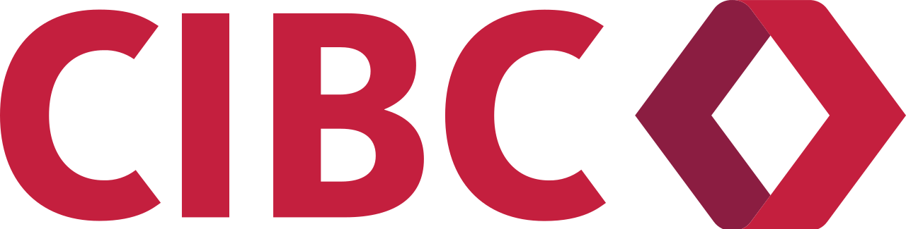
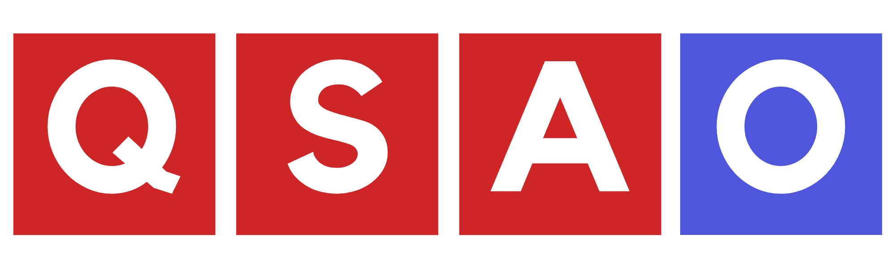
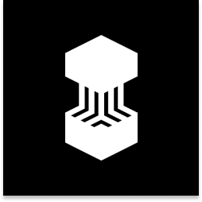
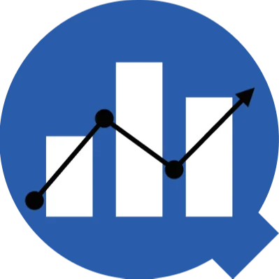

Is Manchester United Better Without the Ball? - Sports Analytics Research Article
"United have spent years trying to dominate possession. The numbers say they shouldn’t."
Software, data & a little curiosity.
Hey, I’m
Computer Science at Queen’s. Incoming @ AMD.
I study Computer Science at Queen’s. I’ve worked on investing tools at CIBC, transit data at Metrolinx, and soccer analytics with QSAO. Here’s some of what I’ve been working on.
CIBC Metrolinx
Joining AMD in May 2027 for a 16-month internship. Until then, studying Computer Science at Queen’s University and leading soccer analytics at QSAO.
Get in touchHi, I'm Arvin!
I am a third-year Computer Science student at Queen's University, specializing in Software Design, with a Certificate in Business from the Smith School of Business. I enjoy working at the intersection of technical depth and real-world impact, whether that’s analyzing transit records, building RAG-powered healthcare tools, or translating sports metrics into data-driven insights.
Beyond code, I love travelling and sports. I’ve played competitive soccer all my life and earned my 2nd degree black belt as a karate instructor, experiences that taught me resilience, communication, and adaptability.
Education
Interests

AMD • Markham, Ontario

CIBC • Toronto, ON
Metrolinx • Toronto, ON

QSAO • Kingston, ON

QMIND • Kingston, ON
QMIND • Kingston, ON
QSAO • Kingston, ON
Queen’s AutoDrive • Kingston, ON

QUANTT • Kingston, ON
Healthcare tools, movie recommendations, and a few experiments along the way. Explore the code behind each project.
Healthcare RAG system delivering personalized post-surgery recovery guidance for doctors & patients.
View sourceInteractive movie discovery platform built with Next.js, real-time API search and filtering, personalized recommendations, and a Google Gemini-powered chatbot.
View sourceModern responsive portfolio built with HTML5, CSS3, and vanilla JavaScript. Features dark mode, SEO optimization, and accessibility-first design. Showcasing my experiences and achievements.
View sourceVoice-first extension that guides users through the web with AI assistance.
View sourceInteractive AI-powered negotiation practice for first-time renters.
View sourcePython arcade game built with Pygame and Tkinter timer mechanics.
View sourceNo projects match this filter right now.
Machine learning model for WAR projections and Statcast pipelines for roster, trade, and contract strategy using Python frameworks.
2nd place finish for Miami Heat analytics pitch focused on performance strategy and roster fit using Python frameworks.
"United have spent years trying to dominate possession. The numbers say they shouldn’t."

A data-backed look at managerial bounce patterns at Man United, with expectations for Ruben Amorim’s tenure.
I respond quickly to coffee chats, project collaborations, internship opportunities, and technical discussions.